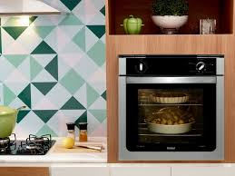

Voltar.
Modo de Preparo;
1) Bata todos os ingredientes no liquidificador.
2) Coloque em uma forma untada e enfarinhada.
3) Leve ao forno preaquecido e deixe assar, por cerca de 40 minutos.
ㅤ
E estará pronto seu bolo de fubá!
